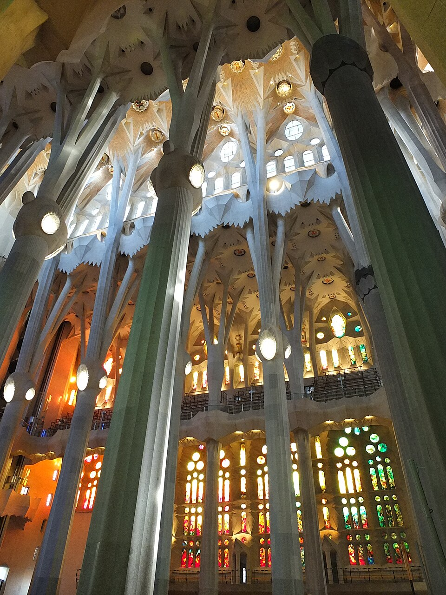
85. La Sagrada Família Interior
Barcelona, Spain
ShowTech | Tourism Gallery | Page 8 of 8

Barcelona, Spain
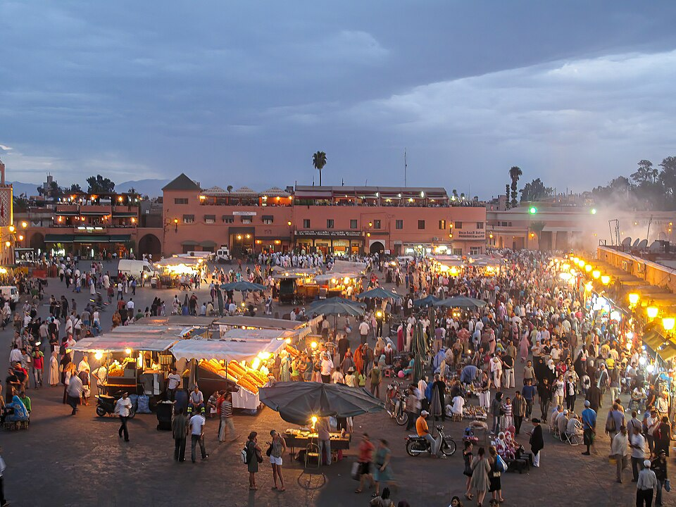
Marrakesh, Morocco
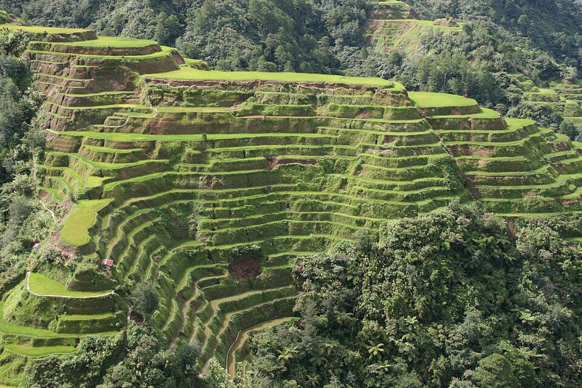
Ifugao, Philippines
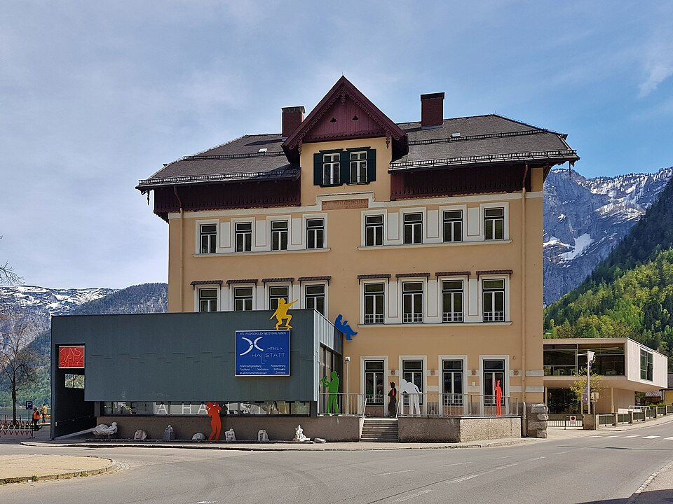
Austria
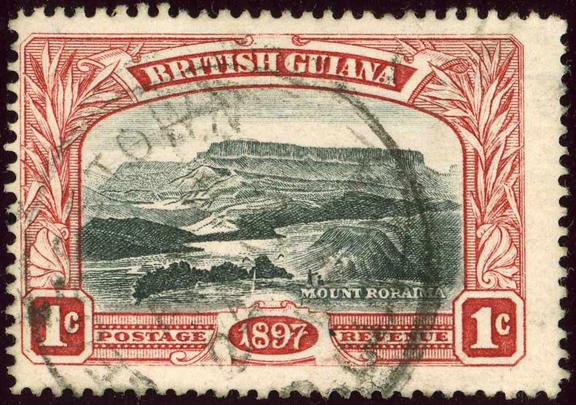
Venezuela / Brazil / Guyana
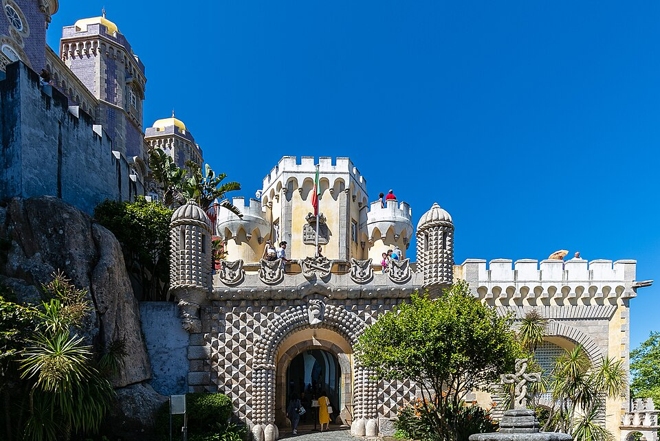
Sintra, Portugal
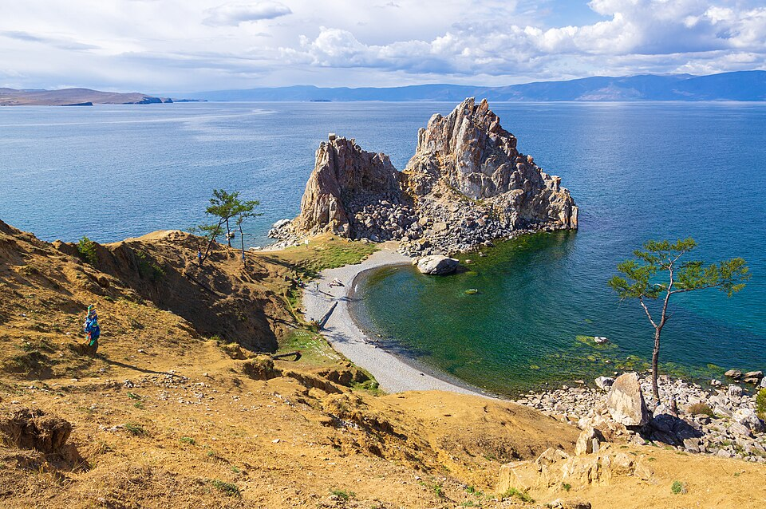
Siberia, Russia
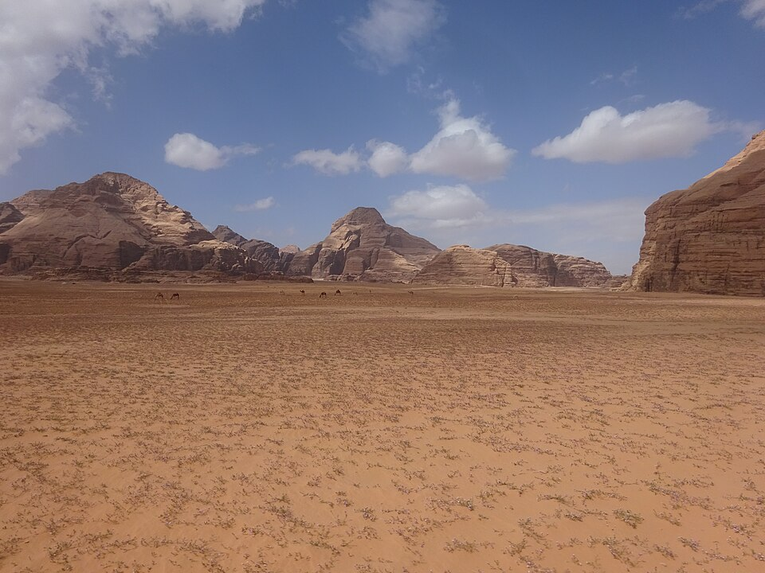
Jordan
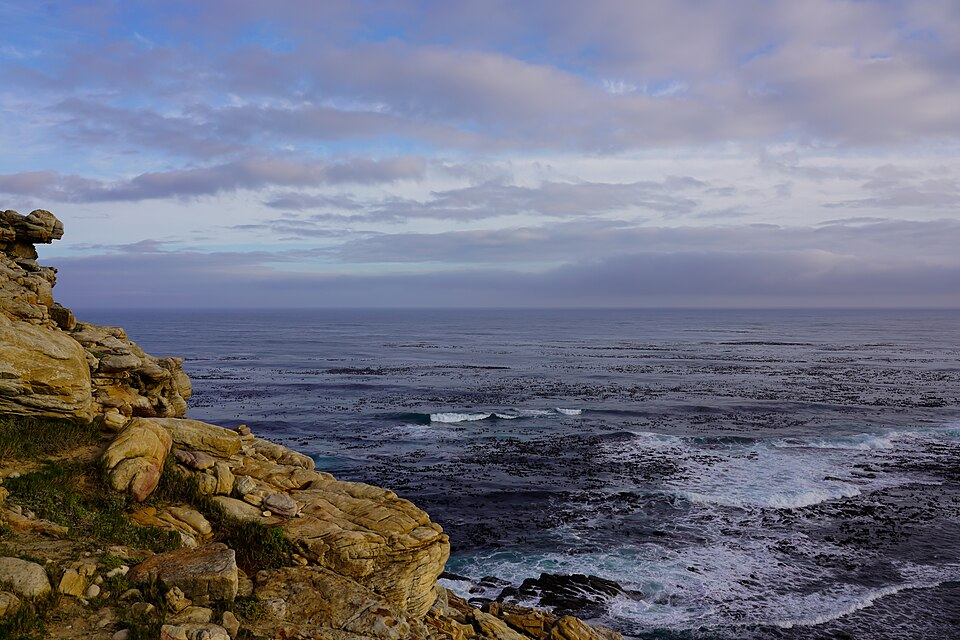
South Africa
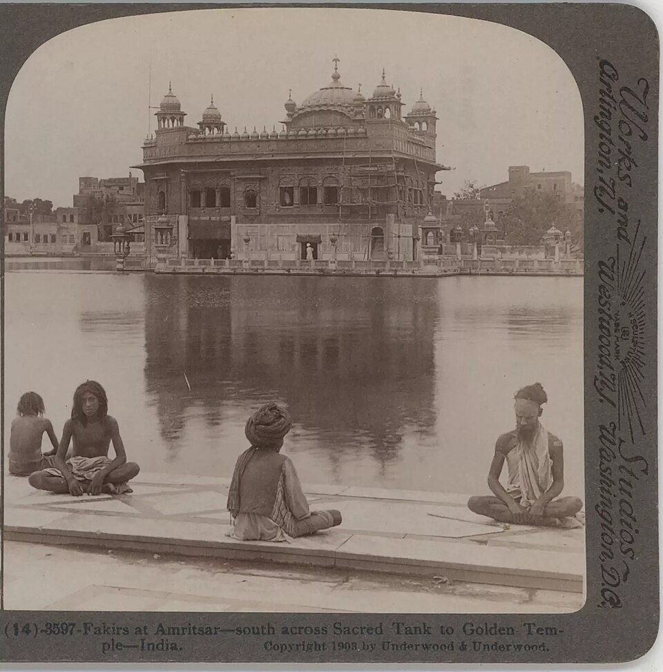
Amritsar, India
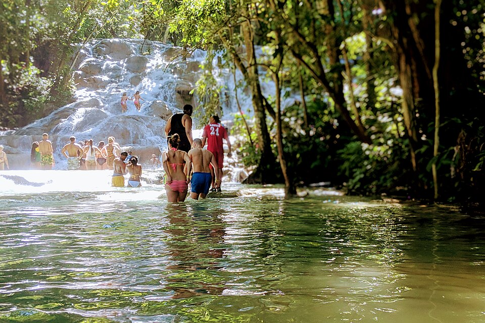
Ocho Rios, Jamaica
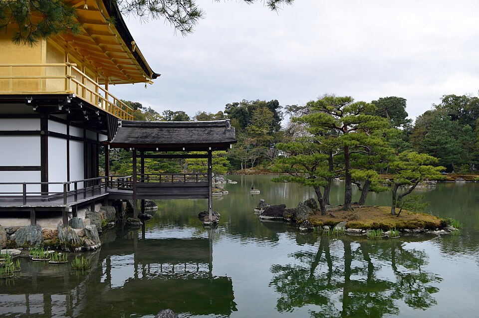
Kyoto, Japan